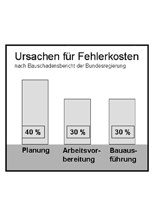

Viele Stör- und Unfälle sowie viele Fehler haben ihre Ursache in mangelhafter Planung und Organisation. Laut Bauschadensbericht der Bundesregierung liegen die Ursachen für Fehlerkosten zu 40 Prozent in der Planung sowie zu jeweils 30 Prozent in der Vorbereitung und in der Ausführung.
Diese Zahlen belegen:
Während der Bauarbeiten zeigen Störungen und Unfälle, dass Mängel in folgenden Bereichen auftreten können:
Die Rangfolge der Schutzmaßnahmen hat Einfluss auf
deren Wirksamkeit.